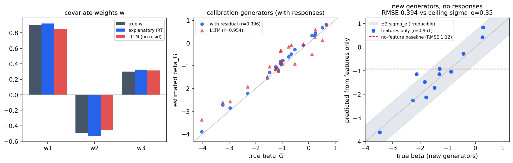

난이도를 시나리오 특징으로 설명할 수 있는가
설명적 IRT는 난이도를 그냥 추정하는 데서 한 걸음 나아가, 난이도를 시나리오 특징의 함수(β = w·x + 잔차)로 푼다. 실전에서 그 특징이 섹션 C에서 모은 지표들(Wagner TTR, Yu 복잡도, Tulpule 가치함수, Kurian Rp)이다. 모의 검증 결과, 특징 가중치 w가 복원되고(0.92/−0.53/0.33 vs 참값 0.90/−0.50/0.30), 응답 데이터가 전혀 없는 새 생성기의 난이도를 특징만으로 예측할 수 있으며(r=0.95, 오차가 이론적 하계에 근접), 특징이 설명 못 하는 잔차 항을 빼면 보정 난이도의 오차가 2.2배로 나빠진다. 코드는 analysis/a1-identifiability/a3_covariates.py에 있다.
무엇을 물었나
A1·A2에서 난이도 b는 생성기마다 자유로운 숫자였다. 그런데 우리에게는 섹션 C가 모아 준 자산이 있다. 시나리오가 얼마나 어려운지를 시나리오 쪽 성질로 매기려던 지표들(TTR·복잡도·가치함수·충돌 근접도)이다. 설명적 IRT(De Boeck)는 이 지표들을 난이도의 설명변수로 넣어 βG = w·xG + eG로 둔다. 여기서 w는 "어떤 특징이 시나리오를 어렵게 만드는가"라는 해석을 주고, 잔차 e는 특징이 설명하지 못하는 생성기 고유의 어려움이다. 물은 것은 셋이다. 첫째, w가 응답에서 복원되는가. 둘째, 한 번도 돌려 보지 않은 새 생성기의 난이도를 특징만 보고 예측할 수 있는가(섹션 C 선행들이 휴리스틱으로 하려던 바로 그 일). 셋째, 잔차 항을 빼고 "특징이 난이도를 완전히 결정한다"고 가정하면 무엇이 깨지는가.
실험 설계
생성기 특징은 실제 지표들처럼 서로 상관(0.4)이 있는 3개로 두고, 참 가중치 w = (0.9, −0.5, 0.3)에 잔차 표준편차 σe = 0.35를 더해 난이도를 만들었다. 학습용 생성기 24개에는 AV 30대 × severity 5수준 × 반복 15회의 응답(54,000개, 충돌률 0.60)을 만들고, 신규 생성기 12개에는 응답을 전혀 만들지 않았다(특징만 있음). 적합은 A2에서 확정한 절차에 공변량 구조를 더한 joint MAP이고, 비교를 위해 잔차 없는 제약 모형(LLTM, β = w·x 정확)도 같은 데이터에 적합했다.
결과 1 · 가중치와 난이도가 복원된다
설명적 IRT의 가중치 추정은 (0.92, −0.53, 0.33)으로 참값 (0.90, −0.50, 0.30)에 붙었고, 학습 생성기의 난이도 β는 r=0.996(RMSE 0.19)으로 복원됐다. 강건성 θ의 복원(r=0.998)도 공변량 구조를 넣었다고 달라지지 않았다. 실전으로 옮기면, "TTR이 짧을수록, 상호작용 복잡도가 높을수록 시나리오가 어렵다" 같은 문장을 가중치의 부호·크기로, 불확실성과 함께 말할 수 있게 된다는 뜻이다.
결과 2 · 응답이 없는 새 생성기의 난이도를 특징만으로 예측한다
이 구조의 실용적 보상이 여기 있다. 새 적대 생성 기법이 나왔을 때, 그것을 AV들에 돌려 보기 전에는 난이도를 모르는 것이 보통이다. 그런데 특징(지표)은 응답 없이도 계산할 수 있으므로, 학습된 w로 난이도를 먼저 예측할 수 있다. 신규 생성기 12개에서 특징만으로 한 예측이 참 난이도와 r=0.951, RMSE 0.394였다. 특징을 안 쓰는 기준선(평균 예측)의 오차 1.12를 1/3로 줄였고, 잔차 σe=0.35라는 이론적 하계(특징이 원리적으로 설명 못 하는 몫)에 거의 닿았다. 격자를 설계할 때 목표 난이도 대역의 생성기·severity를 미리 고르는 데(A1의 "중간 범위" 교훈, D-study) 바로 쓸 수 있는 능력이다.

결과 3 · "특징이 난이도를 완전히 설명한다"고 가정하면 깨진다
잔차 항을 빼면(LLTM) 난이도가 특징 평면 위로 강제로 눌린다. 그 결과 학습 생성기의 난이도 복원 오차가 0.19에서 0.41로 2.2배가 되고, 가중치도 0 쪽으로 끌려갔다(0.85, −0.46, 0.31). 이것이 섹션 C의 교훈을 수식으로 다시 말해 준다. Ponn·Qiu처럼 난이도를 특징의 공식으로 직접 정의하는 접근은, 특징이 설명하지 못하는 생성기 고유의 어려움(여기선 σe)이 있는 한 보정 난이도를 비뚤게 만든다. 특징은 난이도를 예측하는 데는 강력하지만(결과 2), 난이도를 정의하는 데는 응답에서 추정하는 잔차가 함께 있어야 한다. 흥미롭게도 신규 생성기 예측만 보면 두 모형이 비슷한데(0.39 vs 0.40), 예측은 어차피 w·x만 쓰기 때문이다. 차이는 보정(이미 돌린 생성기의 난이도를 정확히 아는 것)에서 난다.
다음 단계
A3까지로 모델의 설명 구조가 확정됐다: 난이도는 특징(섹션 C 지표) + 잔차로 풀고, 특징은 해석과 신규 생성기의 사전 예측에 쓰며, 보정은 반드시 잔차를 둔 채 한다. 남은 모델 쪽 항목은 A4(회피가능성 라벨러 확정) 하나다. 하한 u를 어떤 규칙(RSS, FREA의 LFR, Tulpule over-critical)으로 라벨링할지, 그리고 라벨이 틀렸을 때(오라벨) 추정이 얼마나 다치는지를 모의로 점검하면 A 단계가 끝나고 B(실험 인프라)로 넘어간다.